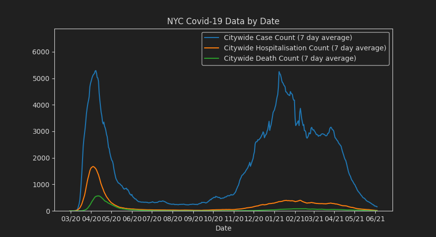
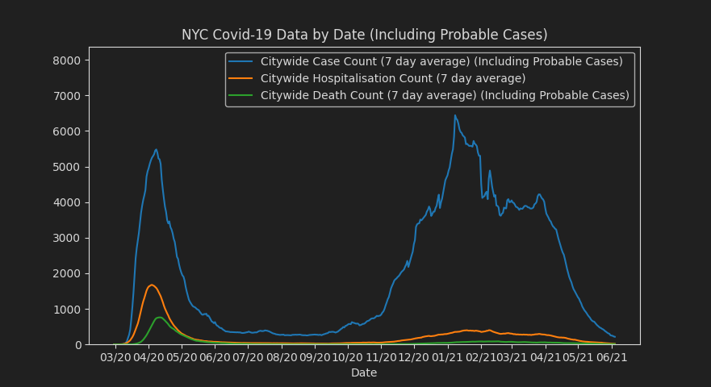
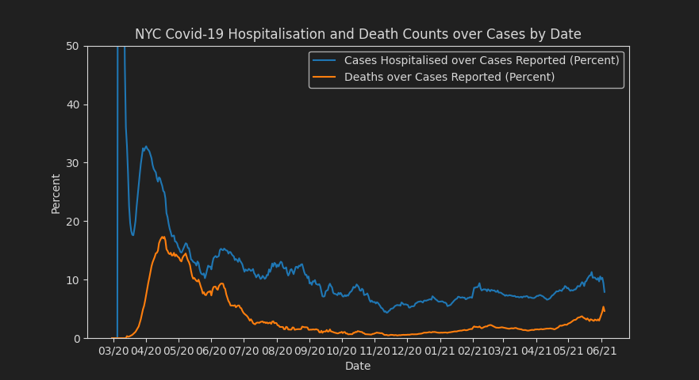
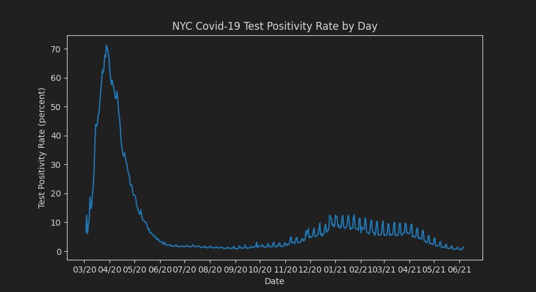
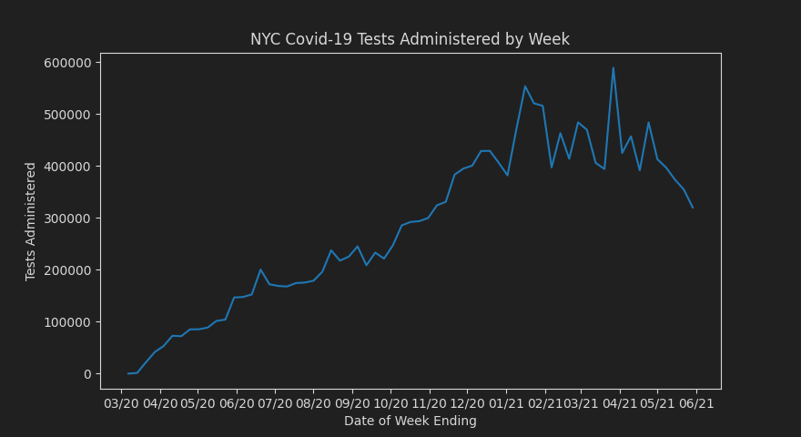
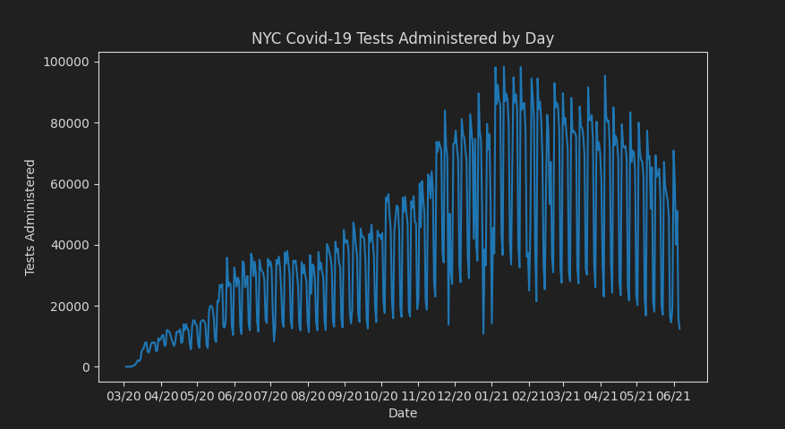
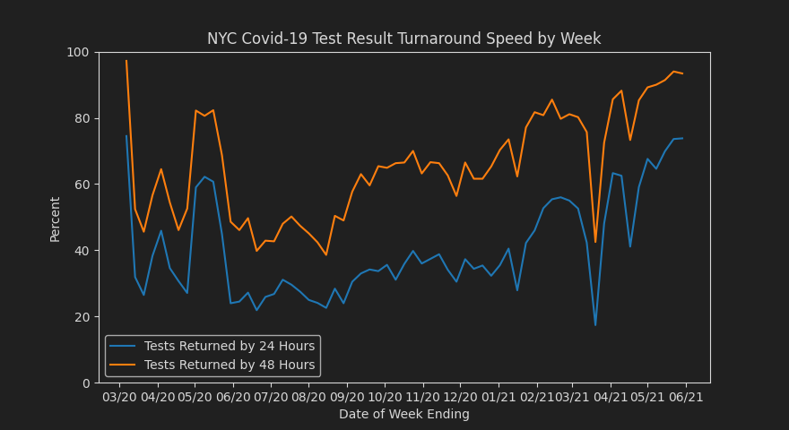
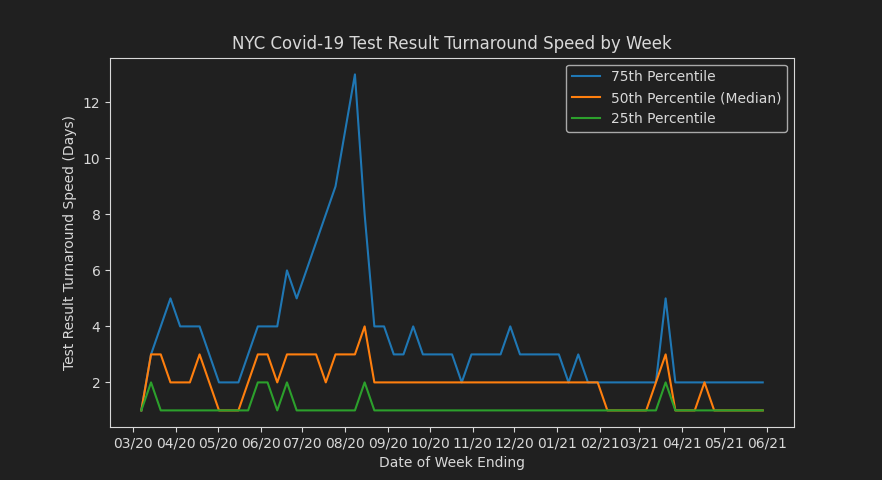

Author Info:
This website and project was made by Frank Chun Yeung Wong as the final project of the Intro to Computer Science Spring 2021 course at Stuyvesant High School.
Project Info:
The code used for this project is mainly in Python and is available here. The matplotlib stylesheet used can be found here. The website code may be seen by viewing the page source.
In this project, we will be examining NYC's publicly available COVID-19 related data and analyse and visualise it.
Data Sourcing:
The data used for this project comes from New York City Department of Health's publicly available data obtained from Github here, you can also see the main introduction page for the data here.
To be specific, the data-by-modzcta.csv in the totals folder, and data-by-day.csv, testing-turnaround.csv, and tests.csv files in the trends folder, were used.
Statistical Notes on Data:
There are certain irregularities with the data, most notably affecting the test speed statistics for a week around late April due to there being data reporting delays to NYC Department of Health for a few days.
"Tests" in the datasets used and graphs refers to molecular PCR tests only.
Questions Asked:
- Which periods of time were the most badly affected?
- How does the current COVID-19 situation compare with the earlier days?
- Daily infections/death rates?
- Test rates?
- Test positivity rates?
- Which neighbourhoods were/are doing better than others?
- How quickly are tests being conducted and returned?
|  |  |
| These graphs shows NYC Covid-19 case counts by date. We can see the two spikes, one early on around April-May 2020, and one in early 2021. We can also see that the current pandemic situation is relatively much better. In addition, we also note that hospitalisation and death counts during the 2021 spike were much lower than in the 2020 spike, reflecting better medical preparations and knowledge of new treatments. We also note that the graph on the right which includes probable cases has a higher second spike, showing how testing inadequacies were still an issue to a degree (much more probable cases than actual), although to a lesser degree during the second spike. | |
|  | This graph shows a cropped version of Covid-19 hospitalisations and deaths over case count. This is calculated by taking the day's hospitalisation and death count respectively and dividing it by the case count. This cases two issues. Firstly, during the early days of the pandemic, with low cases, the hospitalisation rate can go incredibly high just by a few cases. Secondly, the death rate you see here is inaccurate, with it being under the actual amount if the number of cases is increasing, and being over the actual amount if the number of cases is decreasing. This is because people don't instantly die when contracting Covid-19, rather it is after 2 to 3 weeks on average, therefore the death data can be seen as being 2 to 3 weeks behind the case data, leading to inaccurate rates during times of high case count fluctuation. Despite this, we can still see the trend of mostly declining hospitalisation and death rates (except for the death rates rising at the end, likely mainly due to statistical issues as case rates as dropping rapidly, leading the death rates which are "lagging behind" to cause such an effect.) |
|  | This graph shows the Covid-19 test positivity rate by date in NYC. One strange thing that pops out, especially in the more recent dates, is the weekly cycle of test positivity rates to an extent. This might be due to data reporting, or perhaps double-confirmation of a positive/negative test, or simply that people are more likely to get tested without symptoms on certain days of the week, meaning that those days would have lower test positivity rates. We also see the extremely high test positivity rate during the first spike compared to during the second spike, showing the severe lack of testing capacity during the first spike, and the much larger testing capacity now available in comparison. |
|  |  |
| These graphs shows NYC Covid-19 tests administered by day and week. The day graph has high amount of fluctuations based on the day of the week due to how workdays work. The week graph shows a more cleaner trend for this reason. However, both graphs show the trend of rising tests until the second spike, then slowly decreasing as less people need tests as vaccination rates rise and Covid cases drop. | |
|  |  |
| These graphs show the turnaround time for Covid-19 tests by week. We see a general positive trend since around July 2020 where testing speed has roughly been constantly increasing. The second graph provides quite a bit less information due to how turnaround times are rounded to the nearest day, so for the most part it is not very helpful, however, it does show one strange thing, that is how the 75th percentile of turnaround time was so slow around 2020 summer, probably due to the large amount of tests for vacation people were taking which overwhelmed a few large testing systems. The spike in turnaround times around April is due to the aforementioned statistical anomaly where data reporting to the NYC Department of Health was delayed. The relatively quick turnaround time in the earliest days of the pandemic in March were probably due to the lack of tests performed, so tests were returned incredibly quickly. The spike in turnaround speed around June 2020 was probably due to a large amount of testing capacity being freed up as the first Covid spike in NYC was ending, and people at the time still didn't get tested much for other reasons. |
|
|
Enter a 5-digit ZIP code here (NYC zipcodes only) to check the neighbourhood with that ZIP code's Covid-19 statistics: |
|
I learned to use Matplotlib and some more advanced functions that it can do, such as being able to deal with dates nicely, as well as making a custom stylesheet for it to match the website colour scheme, as well as how to do data processing and analysis for this project.
Resources Used:
Resources used include Matplotlib documentation, HTML documentation at W3Schools and Mozilla, and miscellaneous Stack Overflow posts.
Personal Note:
This indeed took longer than expected, with I would say I spent around 6 to 7 hours across two main work sessions, which was much more than expected. Luckily I started this early, although this does prove your point about how you really can't predict how long this would take (I originally planned to finish this in one sitting, but gave up after I saw that I had way too much to continue doing).